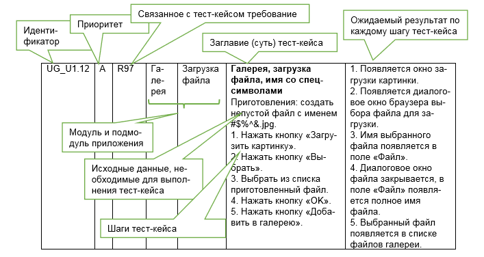

Веб тестирование
Всё о клиент-серверных архитектурах, HTTP, API, безопасности, логах и современных веб-технологиях.
Клиент-серверная архитектура
Клиент-серверная архитектура – это система распределения, в которой одни устройства обращаются к другим для получения необходимой информации или выполнения определенных задач. Клиенты отправляют запросы, серверы их обрабатывают и возвращают результат.
Одноуровневая архитектура — клиент и сервер на одном уровне, вся логика и интерфейс в одном приложении.
Двухуровневая архитектура — клиент и сервер разделены, клиент — UI и часть логики, сервер — данные.
Трёхуровневая архитектура — клиент (UI), сервер приложений (логика), сервер БД (данные).
Многоуровневая архитектура — добавляются промежуточные слои (кеш, балансировщики и т.д.).

Толстый клиент — много логики на клиенте, меньше нагрузка на сервер.
Тонкий клиент — минимум логики на клиенте, всё на сервере.
Разница между архитектурой и технологией
- Архитектура — концепция взаимодействия клиентов и серверов.
- Технология — реализация архитектуры с помощью конкретных протоколов и инструментов.
Пример: Архитектура — браузер отправляет HTTP-запрос на сервер. Технология — используется HTTP, сервер Nginx, данные в JSON.
Типы серверов
- Веб-сервер (Nginx, Apache)
- Базы данных (MySQL, PostgreSQL)
- Файловый сервер (FTP, SMB)
- Сервер приложений (Java Spring, Node.js)
- Почтовый сервер (SMTP, IMAP, POP3)
- Прокси-сервер
Модели взаимодействия клиент-сервер
- Request-Response — клиент отправляет запрос, сервер отвечает (REST API, сайты).
- Persistent Connection — постоянное соединение (WebSocket, чаты).
- Publish-Subscribe — подписка на события (Kafka, Firebase).
- Peer-to-Peer — клиенты общаются напрямую (торренты, криптовалюты).
Облачные серверы (Cloud Servers)
IaaS — аренда виртуальных машин (AWS EC2, Google Compute Engine).
PaaS — готовые платформы для развертывания (Heroku, Firebase).
SaaS — готовый софт (Gmail, Google Drive).
Преимущества облака
- Масштабируемость
- Отказоустойчивость
- Нет необходимости в собственном железе
URL
URL (Uniform Resource Locator) — адрес уникального ресурса в интернете. Рекомендуется не более 2000 символов.
Микросервисы и монолиты
Монолитная архитектура — Единое приложение, где все компоненты (UI, бизнес-логика, БД) работают в одном процессе и развертываются как единое целое.
- + Простота разработки и развертывания
- + Производительность
- + Меньше инфраструктурных сложностей
- - Сложность масштабирования
- - Зависимость компонентов
- - Ограниченная гибкость
Микросервисная архитектура — Приложение разбито на множество небольших независимых сервисов, каждый из которых решает свою задачу и общается с другими через API (HTTP, gRPC, Message Queue).
- + Масштабируемость
- + Гибкость разработки
- + Независимость внедрения
- + Устойчивость
- - Сложность управления
- - Межсервисное взаимодействие
HTTP и HTTPS
HTTP — протокол передачи данных между клиентом и сервером.
HTTPS — HTTP с шифрованием через SSL/TLS.

Версии HTTP
- HTTP/1.0 — заголовки, разные типы контента
- HTTP/1.1 — Keep-Alive, кэширование
- HTTP/2 — мультиплексирование, скорость
- HTTP/3 — QUIC, минимизация тайм-аутов
HTTP-методы
- GET, POST, PUT, DELETE, PATCH
- HEAD, OPTIONS, TRACE, CONNECT
Идемпотентные методы: GET, PUT, DELETE
Неидемпотентные методы: POST
Кешируемые методы: GET, HEAD, OPTIONS
Безопасные методы: GET, HEAD, OPTIONS
Небезопасные методы: POST, PUT, DELETE, PATCH
Структура HTTP-запроса
GET /path HTTP/1.0
Host: www.example.com
User-Agent: Mozilla/5.0
Accept: text/html
Host: www.example.com
User-Agent: Mozilla/5.0
Accept: text/html
Структура HTTP-ответа
HTTP/1.1 200 OK
Content-Type: text/html
Content-Length: 123
Body
Content-Type: text/html
Content-Length: 123
Body
HTTP-коды состояния
- 1xx — информационные
- 2xx — успешные
- 3xx — перенаправления
- 4xx — ошибки клиента
- 5xx — ошибки сервера
HTTP-заголовки
- Host, User-Agent, Accept, Authorization, Content-Type, Cache-Control, Set-Cookie
SSL сертификат
SSL-сертификат удостоверяет подлинность сайта и позволяет использовать зашифрованное соединение (HTTPS).
Аутентификация и Авторизация
Аутентификация — подтверждение личности пользователя. Авторизация — проверка прав доступа.

Сессия на сайте
Сессия — промежуток времени между входом на сайт и его закрытием.
Токен
Токены — средство авторизации для каждого запроса. Генерируются на сервере на основе секретного ключа.
Access Token — для доступа к защищённым ресурсам, ограниченный срок действия.
Refresh Token — для получения новых access token без повторной аутентификации.
JWT — стандартный формат токенов (заголовок, payload, подпись).
Cashe и cookie
Кэш — временная память для ускорения загрузки страниц.
Cookie — небольшой набор данных, отправляемый сервером и хранимый на клиенте.
Виды куков
- Сессионные куки
- Перманентные куки
- Первичные куки
API
API — набор правил и протоколов для взаимодействия программ.
Виды API
REST API — архитектурный стиль, работает через HTTP, возвращает JSON или XML.
SOAP API — использует XML, строгие стандарты, часто в корпоративных приложениях.
GraphQL — язык запросов, позволяет получать только нужные данные.
WebSocket API — двусторонняя связь, подходит для чатов и онлайн-игр.
Full REST API — полностью соответствует принципам REST.
REST
REST — архитектурный стиль, использует стандартные HTTP-методы.
Плюсы
- Простота и легкость
- Гибкость и универсальность
- Совместимость с браузерами
- Меньшая нагрузка на сервер
Минусы
- Ограниченная стандартная спецификация
- Нет встроенных механизмов безопасности
SOAP
SOAP — формат обмена сообщениями на XML, строгие стандарты.
Плюсы
- Строгая спецификация и стандарты
- Встроенные механизмы безопасности
Минусы
- Сложность и объемность
- Требовательность к ресурсам
- Меньшая гибкость
- Не всегда совместим с браузерами
Web-Service
Веб-сервис — набор протоколов и стандартов для обмена данными между системами (XML, JSON, SOAP, REST).
Все веб-сервисы — это API, но не все API — веб-сервисы.
JSON
JSON — текстовый формат обмена данными, основанный на JavaScript.
Снифферы трафика
Снифферы — инструменты для перехвата и анализа сетевых пакетов.
- Перехват данных
- Анализ трафика
- Мониторинг безопасности
Брокеры сообщений (Kafka)
Apache Kafka — распределённая платформа для передачи, хранения и анализа сообщений в реальном времени.
- Продюсер — отправляет сообщения
- Потребитель — получает сообщения
- Брокер — передаёт сообщения
- Топик — виртуальное хранилище сообщений

Применение Kafka
- Аналитика в реальном времени
- Сбор логов
- Интеграция микросервисов
- Системы очередей
- Мониторинг и алертинг
Модель OSI
OSI — семиуровневая модель взаимодействия сетевых устройств.
Физический уровень — передача данных через среду (кабели, беспроводные каналы).
Канальный уровень — передача данных между устройствами в локальной сети.
Сетевой уровень — маршрутизация и адресация.
Транспортный уровень — контроль передачи данных, надежность.
Сеансовый уровень — управление сессиями связи.
Представительный уровень — преобразование, шифрование, сжатие данных.
Прикладной уровень — доступ приложений к сети и ресурсам.
Модель TCP/IP
TCP/IP — сетевая модель передачи данных, четыре уровня, обеспечивает надёжный канал связи.
TCP и UDP
TCP — надёжная передача данных, стабильное соединение.
UDP — быстрая, но менее надёжная передача данных.

QUIC
QUIC — протокол на базе UDP, обеспечивает мультипоточность, приоритезацию, сквозное шифрование.
Логи
Логи — записи о событиях, ошибках, действиях пользователей и состоянии системы.
Виды логов
- Логи ошибок
- Логи производительности
- Логи доступа
- Логи тестирования
- Логи событий
Уровни логирования
- DEBUG — для отладки
- INFO — обычные события
- WARNING — потенциальные проблемы
- ERROR — ошибки, не останавливающие приложение
- CRITICAL/FATAL — критические ошибки